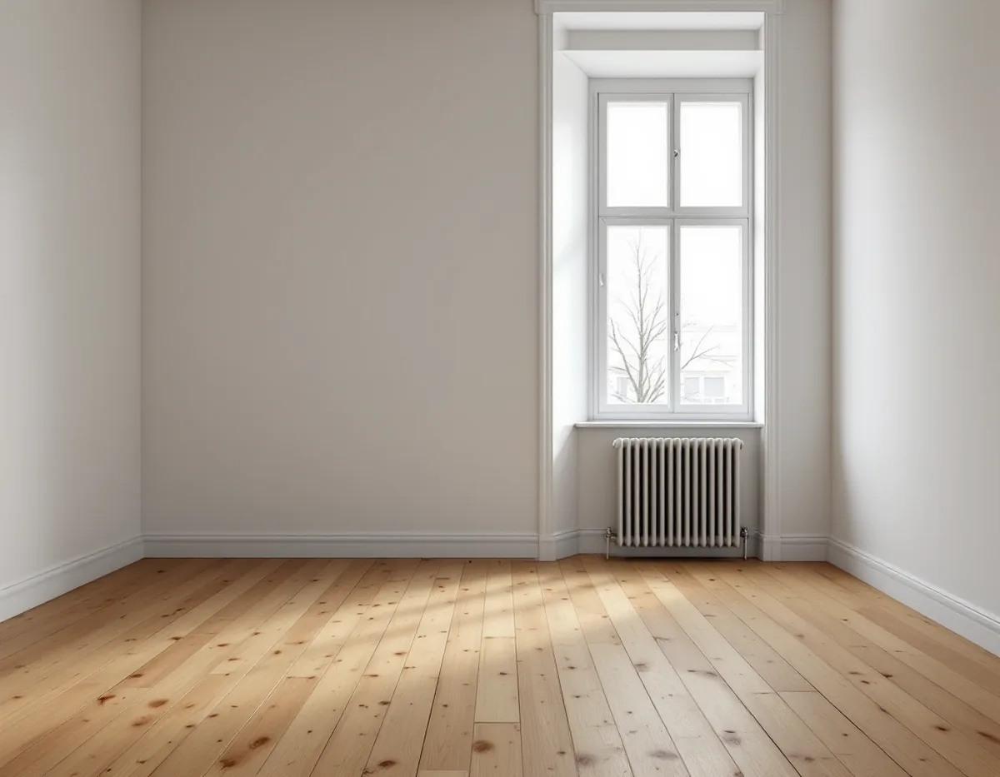
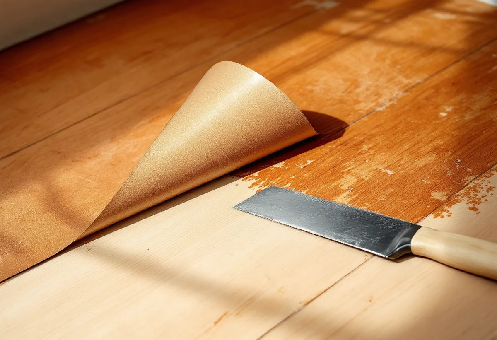

Platsbesök
Vi lyfter en hörna av mattan och ser vad som finns under, och noterar husets byggår.
Under en gammal linoleum- eller plastmatta kan det ligga ett trägolv som ingen har sett på länge. Det kan vara ett enkelt undergolv som inte var tänkt att synas, eller ett fint golv som täcktes för att det ansågs omodernt. Geal Entreprenad AB tar fram och slipar trägolv i lägenheter och villor i Solna, och vi börjar med att ta reda på vad mattan och limmet består av.

Solna stads planbeskrivning för vindsinredning i Råsunda beskriver stadsdelen som ett äldre bostadsområde där många byggnader uppfördes i början av 1900-talet. Utbyggnaden skedde successivt, och bebyggelsen är blandad. I de centrala delarna finns flerfamiljshus, längs Råsundavägen som regel i fem våningar, och i norr mot Råstasjön och söderut finns villaområden. Råsunda var i stort sett färdigutbyggt på 1950-talet, och detaljplanen från 1934 gällde ursprungligen för hela planområdet.
Bland de miljöer som staden räknar som viktiga helheter finns stenstaden i Råsunda, Råsunda villastad, villabebyggelsen i norra Råsunda och 1950-talsbebyggelsen i Råsunda, Huvudsta och Skytteholm. Husen spänner alltså över ett halvt sekel, och golven under mattorna kan vara lika olika.

Svenska Byggnadsvårdsföreningen skriver att det under funktionalismens 1930-tal var omodernt med trägolv. Man ville ha praktiska, heltäckande ytor som var lätta att rengöra, och valde linoleummattor som lades på ett enklare undergolv med lite smalare plank. I finare rum kunde ekparkett läggas på undergolvet, ofta i fiskbensmönster. Om en lägenhet från 1930 skriver föreningen att linoleum ansågs praktiskt, hygieniskt och modernt, och att den tunga mattan också dämpade ljud mot undergolvet.
Enligt en undersökning från 1946 som föreningen återger låg korkmattor i 67 procent av de svenska bostadsrummen. Redan mot slutet av 1800-talet förekom hyvlade och spontade brädor som underlag för korkmattor. Föreningen påpekar också att många trägolv senare förstördes när man lade heltäckande plastmattor på betong- eller flytspackel och spikade fast masonitskivor.
Föreningen skriver också att äldre linoleummattor kan rekonditioneras med linolja om man vill bevara utseendet.
Boverket listar mattor på vägg och golv, golvplattor, lim under mattor, skikt under mattor och golvmassor bland de material där asbest kan förekomma. Asbest förbjöds inom byggsektorn 1982, och om byggnaden är uppförd under perioden 1940–1980 är det enligt Boverket sannolikt att det finns asbest någonstans i den. Asbest kan också finnas i produkter som har satts in vid tidigare renoveringar. Provtagning och analys är det enda säkra sättet att veta. Om asbest saneras i samband med byggarbete räknar Skatteverket det som rotarbete.
När mattan väl är borta kan det finnas tejp och limrester kvar. Mot dubbelhäftande tejp föreslår föreningen hushållspapper med rödsprit som får verka omkring tio minuter, och att man sedan skrapar med en spackelspade.
Ibland syns spår efter insekter i träet. Föreningen förklarar att de kan komma från tiden när golvet var täckt med en tät matta som skapade en förhöjd fukthalt närmast mattan, och att spåren syns tydligare efter en slipning. I samma svar skriver föreningen att slippappren kommer att sätta igen snabbt.
Föreningen skriver att undergolvet i hus från 1930-talet kan vara grovt lagt, med bredare springor, fler skarvar och ojämnheter, och att en slipning då kan vara den enklaste lösningen. Ett hyvlat golv har fler intakta träfibrer och ger en finare yta. Slipar man bara bort ojämnheterna kan golvet bli flammigare, även om det jämnar ut sig med tiden.
Många sådana undergolv har enligt föreningen tagits fram sedan 1970-talet och fungerar med färg, lack, olja eller som skurgolv. En del har slipats många gånger, så vi mäter ned till sponten i en springa. Är det bara några millimeter kvar kan det vara bättre att byta golvet eller lägga ett nytt ovanpå. Stora springor kan få ilimmade lister som hyvlas jämnt, medan fogar av lim och sågspån, fogmassa eller linband enligt föreningen har begränsad hållbarhet. Ska ett nytt golv läggas finns det mer under golvläggare i Solna.
Vi lyfter en hörna av mattan och ser vad som finns under, och noterar husets byggår.
Vi föreslår prov på matta och lim innan något rivs, särskilt i hus från 1940–1980.
Rivning, rengöring, lagning och slipning står som egna poster.
Limrester och tejp tas bort och spik som sticker upp åtgärdas.
Undergolvet slipas, och springor fylls med lister där det behövs.
Såpa, olja, lack eller färg läggs på efter vad golvet tål.
Skatteverket räknar slipning av golv och byggstädning efter rotarbete som rotarbete, men att forsla bort skräp ger inget avdrag. I en bostadsrätt ska arbetet göras innanför väggar, tak och golv och du ska ha underhållsansvaret enligt stadgarna.
Avdraget är 30 procent av arbetskostnaden, högst 50 000 kr per person och år och högst 75 000 kr tillsammans med rutavdrag. Material och resor ger inget avdrag. Geal drar avdraget direkt på fakturan.
Golvytan, om mattan och limmet behöver provtas, hur mycket rester som sitter kvar och i vilket skick undergolvet är. Efter ett gratis platsbesök får du ett skriftligt kostnadsförslag.
Parkett, trägolv, klinker och slipning.
Golvläggning i Stockholm →Takbyte, takbesiktning och plåtarbeten.
Takläggare i Solna →Råsunda, Stocksundstorp och Råsta.
Takrenovering i Solna →Kulturmiljöerna, kartan och lovet.
Attefallshus i Solna →Ritningar, kontrollplan och slutbesked.
Byggföretag i Solna →Radhusen, föreningen och lovet.
Fasadmålning i Solna →Putsade villor och krav på material.
Fasadrenovering i Solna →Råsunda, bygglovet och handlingarna.
Fönsterbyte i Solna →Fönster från 1950-talet, kitt och fogar.
Fönsterrenovering i Solna →Bostadsrätt, stambyte och villor.
Badrumsrenovering i Solna →Bostadsrätter i Råsunda, Hagalund och Huvudsta.
Golvläggare i Solna →Bostadsrätter, fläktar och Råsundas villor.
Köksrenovering i Solna →Villor, radhus och lägenheter i Solna.
Målare i Solna →Plåt i Solnas kulturmiljöer.
Plåtslagare i Solna →Väggar, dörrar, balkong och radhus.
Snickare i Solna →Gatusidan, gårdssidan och konstruktionen.
Takbyte i Solna →Tapet efter husets ålder och underlag.
Tapetsering i Solna →Kulturmiljöerna och lovet.
Tillbyggnad i Solna →Hela lägenheten, elen inräknad.
Totalrenovering i Solna →